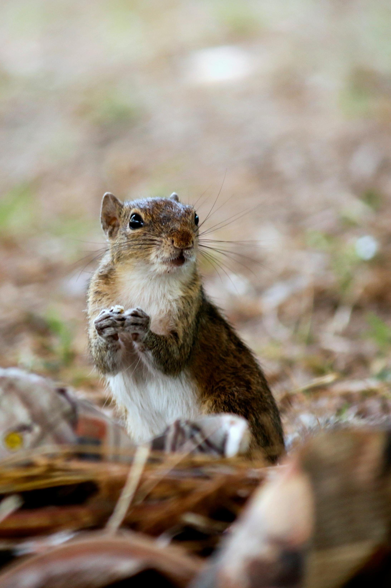
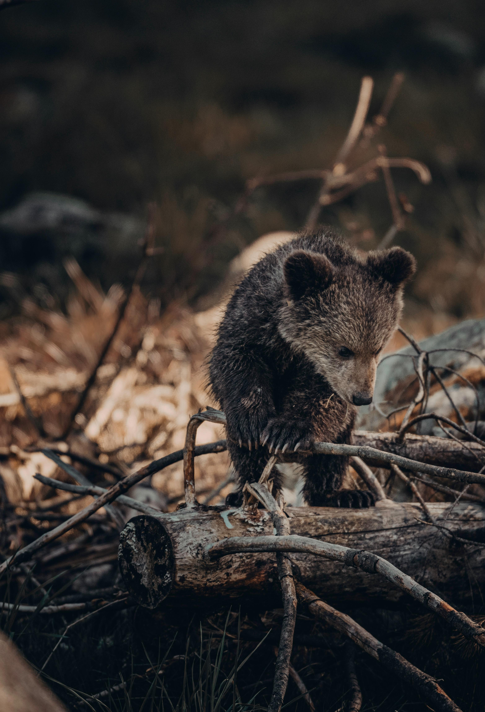

Animais Fantásticos
-

- 
- 
-

-

-

Raposa
A raposa é um mamífero ágil, esperto e de pequeno a médio porte, pertencente à família dos canídeos. Uma das espécies mais conhecidas é a raposa-vermelha (Vulpes vulpes), caracterizada por sua pelagem avermelhada, cauda longa e espessa (conhecida como "foice") e orelhas pontiagudas.
Raposas têm olhos brilhantes, geralmente com pupilas elípticas, que proporcionam uma excelente visão, especialmente no crepúsculo e à noite.
Esses animais são encontrados em quase todos os continentes, adaptando-se facilmente a diversos habitats, como florestas, montanhas, áreas urbanas e até desertos. São omnívoros, alimentando-se de pequenos animais, insetos, frutas e restos deixados por humanos.
Culturalmente, a raposa é frequentemente associada à astúcia e inteligência, sendo tema de mitos, contos e lendas ao redor do mundo. Apesar de sua aparência encantadora, é um animal solitário e cauteloso, que prefere evitar conflitos.
Esquilo
Os esquilos são pequenos mamíferos roedores pertencentes à família Sciuridae, que inclui mais de 200 espécies distribuídas pelo mundo. Eles são conhecidos por seu comportamento enérgico, agilidade ao escalar árvores e caudas longas e peludas, que os ajudam a equilibrar-se e se comunicar.
Suas orelhas são geralmente pequenas e arredondadas, e os olhos grandes oferecem excelente visão, essencial para detectar predadores.
Os esquilos habitam florestas, parques e até áreas urbanas, adaptando-se bem a ambientes onde possam encontrar alimento. Sua dieta é composta principalmente de nozes, sementes, frutas, cogumelos e, ocasionalmente, pequenos insetos.
Existem dois principais grupos de esquilos: os terrestres, que vivem em tocas no solo, e os arborícolas, que preferem viver em árvores. Alguns, como o esquilo-voador, têm membranas de pele que os permitem planar entre árvores.
Urso
O urso é um grande mamífero pertencente à família Ursidae, caracterizado por sua força, corpo robusto, patas grandes com garras afiadas e uma espessa pelagem que varia em cor dependendo da espécie. Existem oito espécies de ursos distribuídas por diferentes habitats ao redor do mundo, como florestas, tundras, montanhas e regiões polares.
Os ursos são omnívoros, com dietas variando de carne e peixes a frutas, mel e vegetação. O urso-polar, no entanto, é um dos poucos predominantemente carnívoros.
Apesar de seu tamanho e força, a maioria dos ursos evita conflitos e tem comportamento solitário, exceto durante a época de acasalamento ou quando mães estão cuidando de filhotes. Algumas espécies, como o urso-pardo e o urso-negro, hibernam no inverno, reduzindo seu metabolismo para sobreviver aos períodos de escassez alimentar.
Culturalmente, os ursos são vistos de forma ambígua: enquanto representam poder e proteção em algumas tradições, também são associados a perigo e força incontrolável.Hoje, muitas espécies enfrentam ameaças devido à destruição de habitat, caça e mudanças climáticas, especialmente o urso-polar.
Lobo
O lobo (Canis lupus) é um mamífero carnívoro da família dos canídeos, amplamente conhecido por sua inteligência, força e vida social estruturada. É o maior membro da família, com pelagem que varia de tons acinzentados a brancos, pretos ou marrons, dependendo da subespécie e do habitat.
Os lobos vivem em grupos familiares chamados alcateias, liderados por um casal alfa. Esses bandos têm hierarquias definidas e trabalham cooperativamente para caçar, cuidar dos filhotes e proteger o território.
Esses animais possuem sentidos aguçados, especialmente o olfato e a audição, que os ajudam na comunicação e na caça. Sua comunicação inclui vocalizações (como uivos), expressões faciais, movimentos corporais e marcações territoriais.
Apesar de sua reputação como predadores ferozes, os lobos são animais cautelosos e evitam contato com humanos. No entanto, em diversas culturas, eles foram retratados de maneiras contrastantes: como símbolos de força, liberdade e lealdade ou como criaturas perigosas e traiçoeiras.
Macaco
Os macacos são primatas inteligentes e sociáveis, pertencentes ao subgrupo dos símios, divididos em duas categorias principais: os macacos do Novo Mundo (encontrados na América do Sul e Central) e os macacos do Velho Mundo (nativos da África e da Ásia).
Os macacos do Novo Mundo, como os saguis e os bugios, geralmente têm caudas preênseis, que ajudam na locomoção entre árvores, enquanto os do Velho Mundo, como os babuínos e os macacos-resos, têm caudas não-preênseis e passam mais tempo no solo.
Esses primatas são extremamente sociais, vivendo em grupos com hierarquias bem definidas. A comunicação entre eles inclui vocalizações, expressões faciais e gestos. Sua dieta é variada, composta de frutas, folhas, sementes, pequenos insetos e, ocasionalmente, pequenos vertebrados.
Os macacos são conhecidos por sua inteligência: usam ferramentas, resolvem problemas e exibem comportamentos complexos, como cooperação e cuidado parental.
Leão
O leão (Panthera leo) é um dos maiores felinos do mundo, conhecido como o "rei da selva" ou "rei das savanas". Esses animais impressionantes habitam principalmente as savanas e pastagens da África Subsaariana, com uma pequena população remanescente na Índia (leão-asiático).
Os leões possuem dimorfismo sexual, com os machos apresentando uma juba característica que varia de cor, de dourada a preta, dependendo da idade, genética e condições ambientais.
Os leões vivem em grupos sociais chamados alcateias ou bandos, que geralmente consistem em um ou poucos machos, várias fêmeas e seus filhotes. Essa estrutura permite uma estratégia cooperativa na caça e na proteção do território. Eles se alimentam de grandes herbívoros, como zebras, gnus e búfalos, mas podem ser oportunistas quando necessário.
Apesar de sua imponência, os leões enfrentam ameaças significativas, como a perda de habitat e conflitos com humanos, o que levou a uma redução drástica em suas populações nas últimas décadas. Por isso, são considerados vulneráveis à extinção, de acordo com a lista da IUCN.